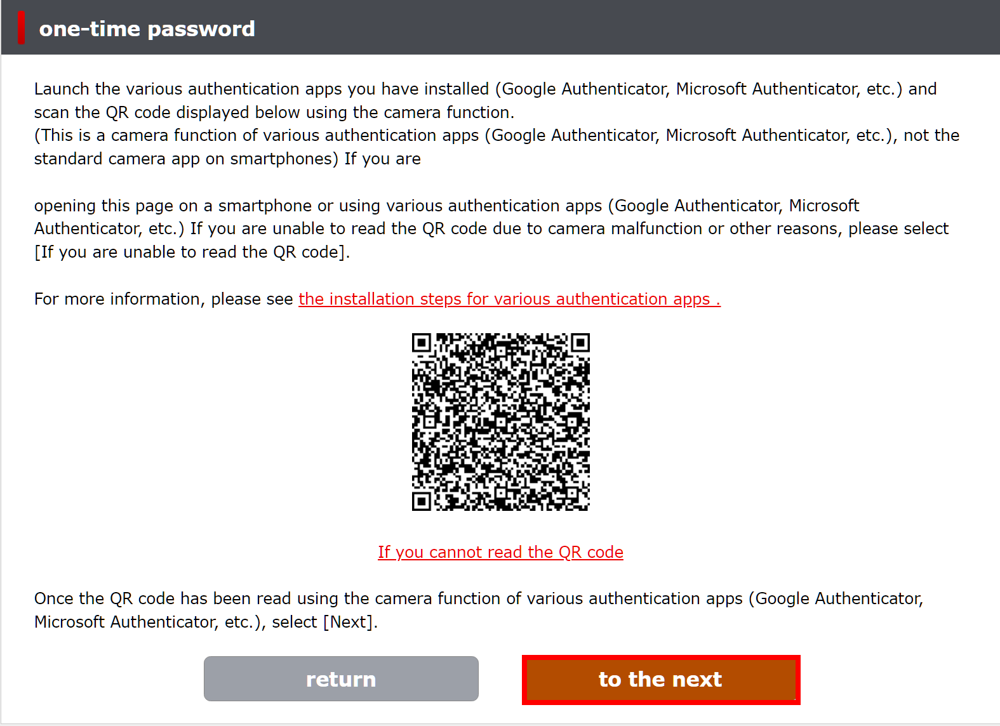
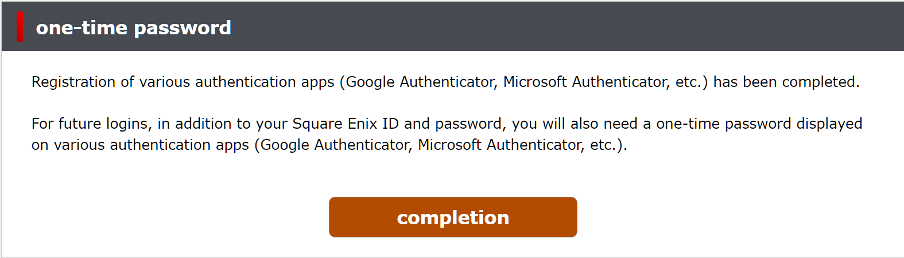

(Guide referenced from CrystalCreeper12)
There are a couple different reasons you might want to
set up OTP (One-Time-Password) for your Square Enix JP
account. This guide will run you through the process
of getting the feature set up on your account.
Keep in mind that in order to set up this
functionality on your account, you're going to need
the credentials initially used to set up your account.
Namely, your ID, your date of birth, and your
email.
Setting Up OTP (One-Time-Password)
The first thing we'll need to do is sign into our JP Square Enix account, using this link: (https://secure.square-enix.com/account/app/svc/otpTop) which will bring you to the familiar screen below. Sign in normally using the credentials of the account you want to add OTP to.

After logging in, you'll be greeted with the following screen. Click on the outlined button to continue.

This will bring you to a confirmation page. Go ahead and just click on the outlined button again to continue.
You'll now be asked to select which version of the authenticator app you have. If you already have one of the two installed, you can just hit the next button, otherwise you can click on one of the options to download the corresponding app. After downloading the app, you can hit next to continue.
You'll be brought to a terms of agreement page. Go ahead and click on "Agree".
You'll once again be redirected to a confirmation page. This will send you a confirmation email to the address associated with the Square Enix account.
Check the email associated with your JP Square Enix account. There should be an email sent within 5 minutes containing a code for your authenticator app. The email should look something like this, with your code found in the location outlined below.
Continue the setup using the authenticator app on your mobile device. The setup will prompt you for your JP Square Enix ID, the associated account's date of birth, and the code from your email.
After completing this registration process, your OTP account setup will be complete.